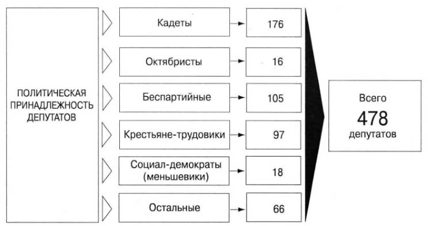
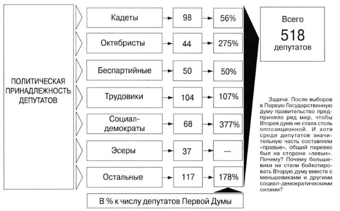
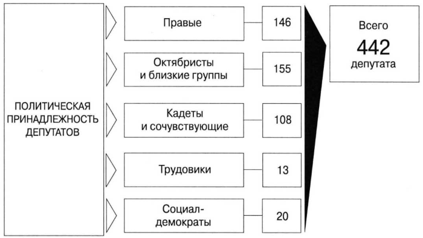

Орган народного представительства (парламент) появился в России в начале ХIХ века, после создания первых политических партий и усиления революционных настроений в стране. 6 августа 1905 года Николай II издал Манифест об учреждении Государственной Думы и положение о выборах депутатов. Согласно Манифесту, новый орган должен был носить только законосовещательный характер. Но Всероссийская политическая стачка в октябре 1905 года заставила Николая II выступить 17 октября с новым Манифестом "Об усовершенствовании государственного порядка", который провозгласил гражданские свободы и созыв законодательного органа - Государственной Думы, которой отводилась роль нижней палаты парламента. Функции верхней палаты были возложены на назначаемый император Государственный Совет, который одобрял или отклонял принятые Думой законы. Дума избиралась сроком на пять лет, право на ее роспуск имел российский император. Из четырех наиболее известных на сегодняшний день демократических норм (всеобщие, прямые, равные, тайные выборы) оказалась реализованной только одна – тайная подача голосов. Выборы проходили не напрямую, а через избрание выборщиков отдельно по четырем куриям - землевладельческой, городской, крестьянской и рабочей. К выборам не допускались женщины, лица моложе 25 лет, учащиеся, военнослужащие действительной службы, ряд национальных меньшинств, не имевшие собственного жилья и пр. Всего до революции 1917 года проработало четыре Думы. В состав Думы вошли землевладельцы, представители промышленной буржуазии, купечества, городской интеллигенции и крестьянства. Общее число избранных депутатов Думы в разное время составляло от 478 до 525 человек. Торжественное открытие первой Думы состоялось 27 апреля 1906 года. Местом заседаний был определен Таврический дворец Санкт-Петербурга.
Выборы в первую Думу прошли весной 1906 года. Председателем был избран член фракции кадетов С.Муромцев. С самого начала своей деятельности Дума вступила в конфронтацию с властью. Депутаты требовали отмены смертной казни и амнистии политзаключенных, установлении ответственности правительства перед Думой, политических свобод. После того, как правительство отвергло все требования депутатов, Дума приняла резолюцию о полном недоверии правительству с требованием его отставки. В результате палата была распущена царем, войдя в историю как "Дума народного гнева". Первая Государственная Дума просуществовала всего 72 дня - с 27 апреля по 8 июля 1906 года. Она провела лишь одну сессию, приняла 2 законопроекта и свыше 300 запросов о незаконных действиях правительства.
Состав первой Государственной Думы Российской империи
Вторая Госдума проработала с 20 февраля по 3 июня 1907 года, успела провести лишь одну сессию, приняв около 20 законопроектов. Председателем был избран кадет Ф.Головин. Основное внимание депутаты Второй Думы обращали на аграрный вопрос, в меньшей степени – на правительственные законопроекты, контрреволюционные репрессии, а также мероприятия по улучшению материального положения социальных низов империи. Дума была распущена через 102 дня с момента начала полномочий. Поводом для роспуска было обвинение 55 депутатов в заговоре против царской семьи.
Состав второй Государственной Думы Российской империи
Третья Дума стала единственной из четырех дореволюционных созывов, которой удалось просуществовать весь положенный 5-летний срок. Ее работа продолжалась с 1 ноября 1907 года по 9 июня 1912 года, за это время состоялось 5 сессий. За время работы Думы третьего созыва сменились три председателя - представители фракции октябристов Н.Хомяков, А.Гучков и М.Родзянко. Несмотря на свое долгожительство, третья Дума также не выходила из кризиса. Острые споры между ее членами возникали по вопросам реформирования армии, крестьянскому вопросу и пр. В третьей Думе впервые состоялось обсуждение и принятие государственного бюджета, а также были приняты важнейшие законы о страховании рабочих, об учреждении новых земств, об образовании.
Состав третьей Государственной Думы Российской империи
Четвертая, последняя в истории царской России, Дума возникла в канун Первой мировой войны. Она просуществовала с 15 ноября 1912 года по 6/19/ октября 1917-го, провела 5 сессий. В Думу были избраны представители левых, центристских и правых партий. Большинство составили октябристы, вступившие в коалицию с кадетами. Председателем Думы вновь стал октябрист М.Родзянко. С началом Первой мировой войны, после крупных поражений русской армии на фронте сформировался серьезный внутриполитический конфликт Думы и исполнительной власти. 25 февраля 1917 года император Николай II подписал указ о прекращении заседаний Думы до апреля того же года. Несмотря на это Дума продолжила собираться на частных совещаниях. Дума являлась одним из центров оппозиции императору Николаю II. 27 февраля ее членами был образован Временный комитет Государственной Думы, который фактически стал выполнять обязанности верховной власти, сформировав Временное правительство. После прекращения существования монархии в России полный состав Думы ни разу не собирался, однако регулярные заседания проводил Временный комитет Государственной Думы. 6 октября 1917 года Государственная Дума была распущена Временным правительством по причине подготовки выборов в Учредительное собрание.
После Октябрьской революции 1917 года верховным законодательным органом РСФСР стал ВЦИК - Всероссийский центральный исполнительный комитет, который давал общее направление деятельности правительства и всех органов власти. В 1936 году, после принятия новой Конституции, на смену ЦИКу пришел Верховный Совет, состоящий из двух палат. Верховный Совет последнего, 12-го созыва был избран в 1990 году на основании Конституции 1978 года в редакции 1990 года.
Сегодня парламент России — Федеральное Собрание — так же, как во времена империи, состоит из двух палат: Государственной думы и Совета Федерации. Первые выборы в парламент прошли в день всенародного голосования по Конституции, то есть 12 декабря 1993 года. В этот день состоялись выборы в Государственную Думу Федерального Собрания Российской Федерации первого созыва.